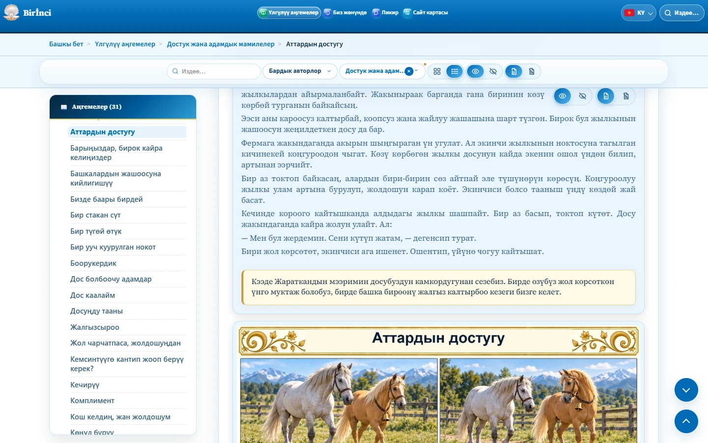

Аңгеменин тексти жана иллюстрациялар
Аңгеме аталыштан, негизги тексттен, насааттан жана иллюстрациядан турат. Насаат ачык каймак түстөгү панелде бөлүнүп көрсөтүлөт. Аңгеме барактары биринчи ачылганда иллюстрациялар көрүнүп турат; аларды көрсөтүү баскычын алдын ала басуунун кереги жок.
Иллюстрацияны сүрөттү жашыруу баскычы менен жашырып, көрсөтүү баскычы менен кайтарыңыз. Текст үчүн өзүнчө көрсөтүү жана жашыруу баскычтары бар. Текст менен сүрөттү бир убакта жашырууга болбойт: жок дегенде бири көрүнүшү керек. Телефондо текст баскычтары көрүнбөй, текст окууга ачык калышы мүмкүн.
Автордун аты жана так булак берилсе, аларга көңүл буруңуз. Бирдей жалпы булак эскертүүсү ар бир аңгеменин астында кайталанбайт. Редакциялоо жана жасалма интеллект жараткан иллюстрациялар тууралуу жалпы маалымат киришүүдө болушу мүмкүн; ал өзүнчө аңгеменин автордук маалыматын алмаштырбайт.
Аңгемени бөлүшүү үчүн ага өткөндөн кийин браузердеги даректи көчүрүңүз. Даректин аягындагы # белгисин жана аңгеменин идентификаторун сактаңыз, мисалы #friendship-of-horses.

